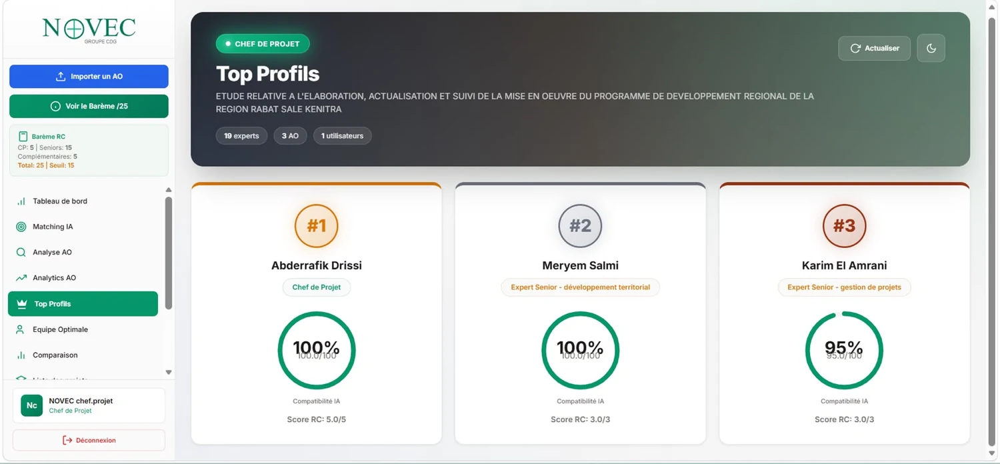
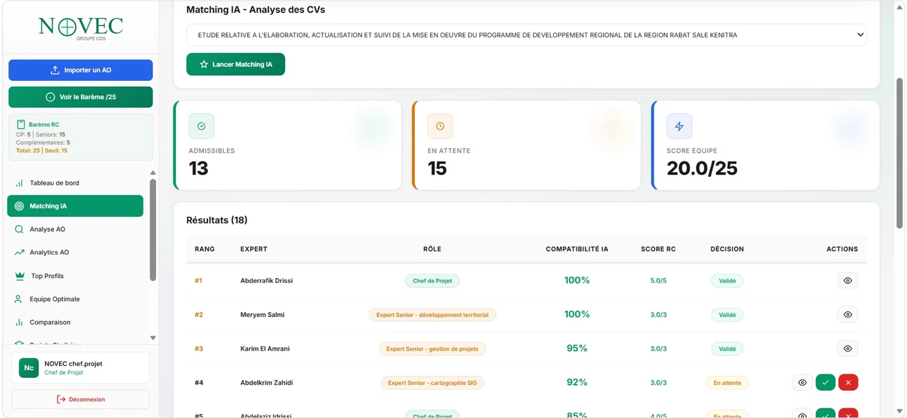
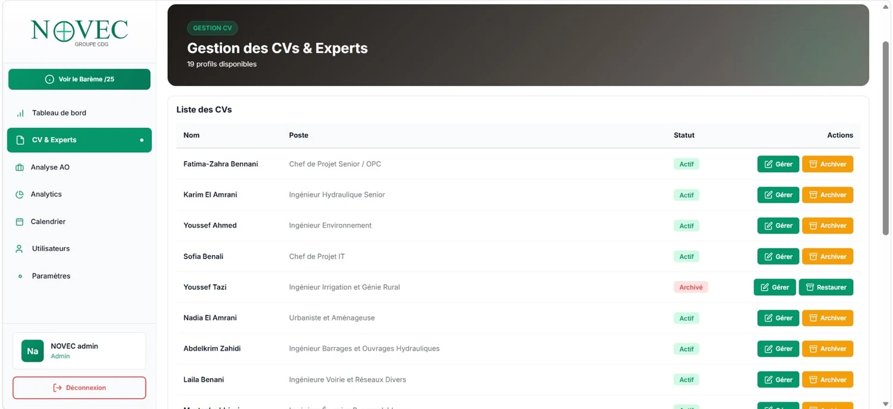
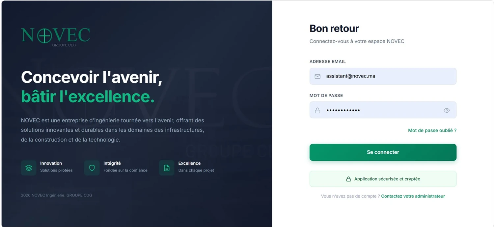

Analyser les documents
Importer et traiter les CV et les documents d’AO : PDF, DOCX, TXT et images.
Conception et contribution au développement d’une application web intelligente qui analyse les CV des consultants et les compare aux exigences techniques des appels d’offres (AO). Le traitement automatique du langage naturel et des algorithmes de matching aident à repérer les profils les plus adaptés et à faciliter la constitution des équipes projet.

Importer et traiter les CV et les documents d’AO : PDF, DOCX, TXT et images.
Extraire compétences, qualifications et expériences professionnelles.
Utiliser le NLP et les algorithmes de matching pour rapprocher profils et critères d’AO.
Calculer un score pondéré et présenter un classement des consultants.
Aider à constituer l’équipe projet optimale selon les exigences du dossier.
Explorer les résultats avec des tableaux de bord et générer des rapports PDF.
La plateforme comprend la gestion des utilisateurs, des rôles et des droits d’accès pour organiser les usages de l’application.
Le scénario fourni met en jeu un appel d’offres et 18 profils de consultants. Le système a atteint un score de 20/25 et identifié 13 profils admissibles, illustrant l’aide apportée au repérage initial des candidatures pertinentes.
Le score décrit ce scénario de test et ne représente pas une mesure générale de performance sur tous les appels d’offres.


